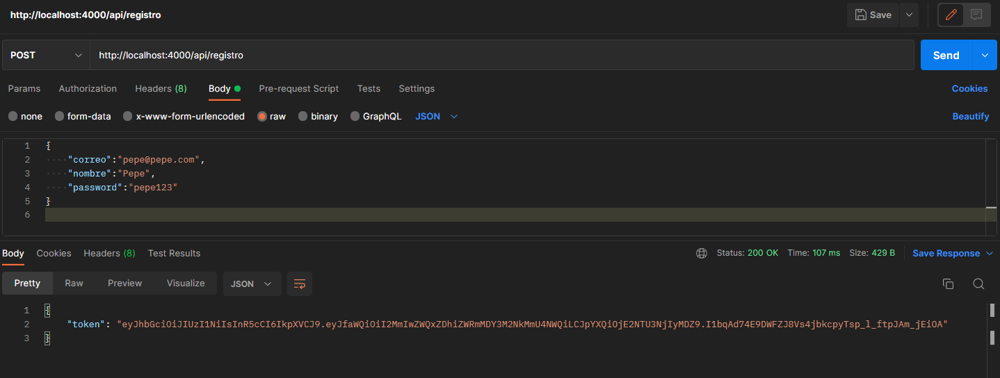
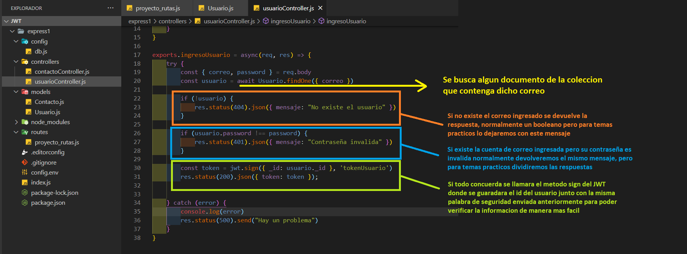
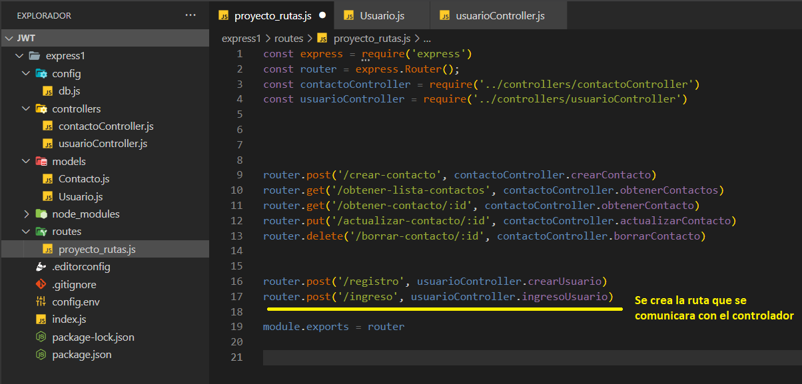
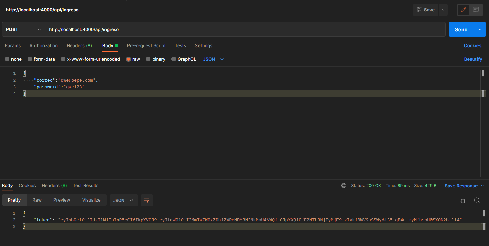
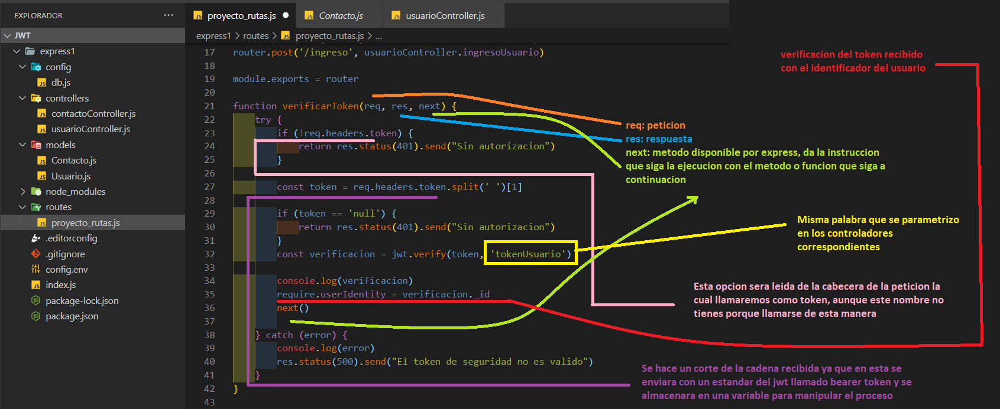
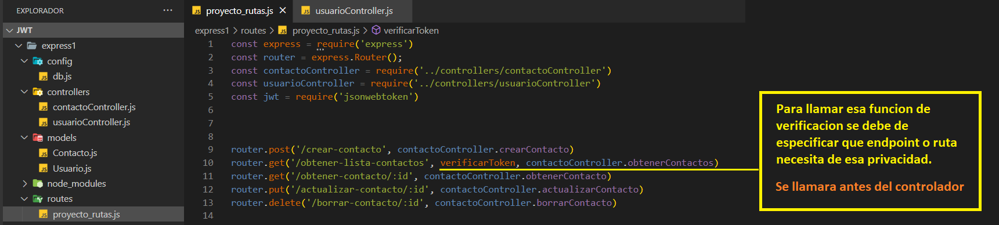

RECORDATORIO:
Se crea o modifica el modelo al cual se hara referecia o accesara a datos que dependen del JWT
Se crea la funcion encargada del controlador encargda de crear el usuario la cual tendra que devolver un token de seguridad, este ultimo es opcional para aquellas aplicaciones que no loguearan el usuario despues de registrado
Tener en cuenta que en el controlador se debera de solicitar la libreria jsonwebtoken que se guardara en una variable para su posterior uso
Proceder a probar, donde se debera recibir una respuesta con el token generado
Se crea funcion encargada de hacer el login en la aplicacion, la cual autorizara al usuario para aquellas secciones que necesiten de alguna validación de identidad
 En este caso para probarlo no se debera de enviar una peticion POST ya que de este dependeremos mas adelante para verificar el token de seguridad con los datos enviados en el cuerpo de la petición
Esta funcion se encargara de recibir el token enviado en la peticion para validar la informacion interna con la informacion externa, esta funcion se puede crear en el archivo de rutas o en el controlador, aunque se recomienda que este en rutas ya que puede ser usada por diferentes controladores
Se especifica que ruta dependera del JWT
